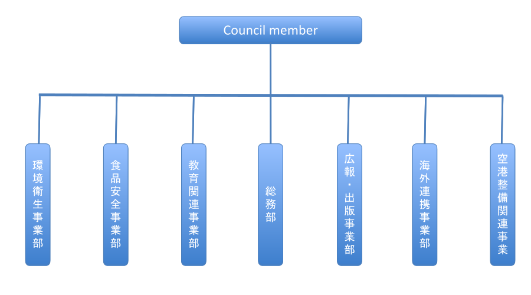

日本は技術大国として世界をリードし、先人の努力のおかげでJAPAN Quality(日本品質)は最高品質として世界から評価・認知されるまでに至りました。 そして私たち日本人は、日本の商品が最高品質であると信じています。
然るに、昨今の大企業の不正行為、食品業界の従業員による不適切行為などを見るにつけ、日本企業・日本人のモラルは低下し、Japan Quality は崩壊の危機にあると思わざるを得ません。 もちろん真摯に品質向上と環境保全に取り組む企業も数多く存在します。サッカーの国際試合における日本人サポーターの後片付けは賞賛に値します。 しかし一方では、産業廃棄物の不法投棄、GI競馬後の競馬場のゴミの山などモラルを疑う行為も存在します。
もはや各企業・個人の自助努力のみでは、Japan Quality は保てなくなりました。この問題を放置することは、消費者の安全を脅かすばかりか、日本の国際競争力を著しく損なう危険性をはらんでいます。 世界には品質基準を定めるISO, GMP, HACCAPなどの国際基準が存在しますが、日本のほとんどの中小企業がその基準を満たしていません。 また日本の工業基準であるJISは、これらの国際基準に対応していません。 2020年のオリンピックを控え日本政府は、少なくとも食品の国際基準であるHACCAPを批准するように指導していますが、なかなか思うように浸透していないのが現状です。
私たちJDCCは民間企業を結集し、民間の機動力を生かして、この問題に取り組む所存です。 Japan Qualityを守る目的で、消費者の安全を守り、環境を保全し、国際的に通用する新基準JDCCを提案します。 私たちは、沖縄からJDCC発信することに大きな意義を感じています。なぜなら沖縄のほとんどの企業が中小企業であり、JDCCの実現に最も困難な地域であるからです。ここ沖縄で成功してこそ、日本中そして世界へと浸透していくと確信しています。 この壮大なプロジェクトに、多くの皆様のご賛同とご協力、そしてご参加をお待ち申しあげます。
日本ドクターズ消費者協会（JDCC）の設立者は、長い研究期間を経て、消費者保護、友好的な環境、不公正取引および人間がコントロールできる域をこえた気候変動における日本と海外の違いについて理解を深めることができました。 こうしたことから、日本の消費者保護および日本政府の支援に貢献できるものと確信します。 私たちは古くからの友人である新垣先生をこのプロジェクトにお招きしました。彼は私よりもはるかに若い沖縄の医師です。 沖縄でこのプロジェクトを始動し、沖縄をモデルとして日本全国に広めていきたいと考えています。 そして東京と大阪にもこのプロジェクトについて知ってもらい、参加・支援の依頼をする予定です。 サーカー・スニール・ランジャン氏と新垣先生の賛同もいただきました。 また、2020年の東京オリンピック前という、時期的にも非常に重要な時におります。 初期投資として日本円にして一千万円の資金を短期間で集め、数人のサポートメンバーとともに日本医師消費者協会（JDCC）を2019年1月に設立いたしました。
ご存知のように，世界は制御不能な機構の変動によって深刻な環境危機に直面してますが，その責任は私たち自身にあり，環境の改善は私たちの行動にかかっています。
長年に渡る研究の成果として，私たちは日本の沖縄にて消費者協議会を設立し，全世界に広めていくことを目指しています。
私たちの使命は，衛生的で健康的な環境を作り，身体に悪影響を及ぼす商品や習慣を防止することです。 協議会の会員は消費者に対し真剣に行動の改革を促し，米国のFDAをはじめとする政府の食品・健康関連の機関に報告を行います。
沖縄は日本の長寿の島として世界的に認められており，観光客が日々増加しています。私たちはこの名誉を誇りに思い，それが永久的に続くことを願っています。 遅かれ早かれ日本の沖縄からその潮流が世界中に広がり，良い環境をもたらすひがやってくるでしょう。
英語の諺で「Think Global Act Locally」とあります。この小さな沖縄だからこそ，世界のモデルとなる事業を起こせると確信しております。
私たちは良い環境にふさわしい健康的な消費者に関心のある，資格をもった専門家を探しており，手をとりあって，沖縄を観光産業にとって魅力のある世界的な長寿の島として維持していきたいと考えています。
公正なマーケットで、安全かつ持続的な消費へ向けて消費者をとりまく環境を向上させるための信用できる「声」となる。
消費者福祉を向上させ、消費者が自身を保護できるようエンパワーメントに努める。
JDCCは、消費者の様々なニーズに対応するため、いくつかのセクションで構成されています。 製品テスト、製造工場の室内外の検査、作業員のボディーチェックと健康管理、製品のラボ試験、製品の保管場所、梱包とラベルチェックなど。 ファストフード店や飲食店のチェック。学校や大学の校内環境チェック。 協会の医師による空港利用者のボディーチェックは、利用者の健康状態と疾患の状態によります（感染の可能性があるかどうか）。 病気や感染症が見つかった場合には適切な処置を行います。 病院の院内環境チェックなど。 法的保護、消費者の健康と食べ物、日々の教育など。 組織の人員全員が有資格者です。
沖縄県を訪れる外国人観光客はここ数年伸び続けています。いま、空前のビジネスチャンスが訪れているといっても過言ではありません。 しかし、そのチャンスをつかみ、外国人観光客をリピーター化し、沖縄を国際観光都市として、ブランド化するためには、国際基準を導入し て、対策を講じる必要があります。
沖縄の玄関口那覇空港に関して、沖縄県は第２滑走路建設に着手し、国際ハブ空港としての発展を目指していますが、弊社コンサルタント によると、那覇空港には、国内線・国際線とも医務室がなく、医師も看護師も常駐していない現状は、国際空港としては安全面での不備に 相当します。
国際便では、長時間座位を強いられるため、当然エコノミー症候群など到着時の急患の発生が予想されます。 成田、羽田、中部、関西、福岡などの他県の主要国際空港には、すべてクリニックが併設され、医師もしくは看護師を常駐させて、急患発生時の対策がなされています。 那覇空港は、国際空港としての安全基準をクリアしておりません。 万が一、急患が発生した場合、救急車を呼んだとしても、すぐに対応はできません。初期治療の遅れにより患者が死亡した場合、あるいは 後遺症を残した場合、責任は空港管理者である沖縄県が取ることになります。 現状、空港管理会社の那覇空港ビルディングの事業計画には医務室の設置は見当たりません。
JDCC は空港医務室の設置に関して、沖縄県に対して検討を促すよう提言します。